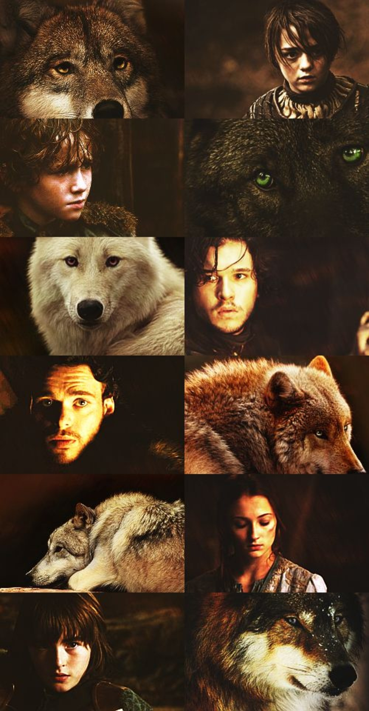
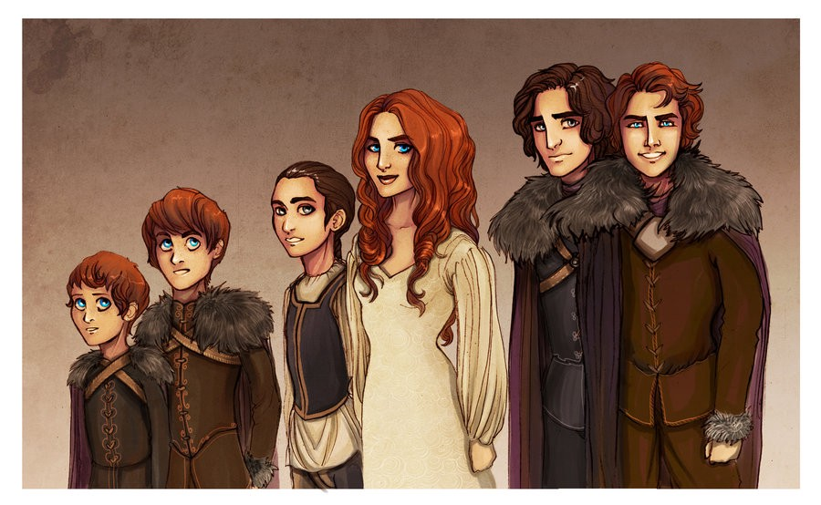

George R. R. Martin dokładnie tak wyobrażał sobie Żelazny Tron.

W 2001 roku, kiedy George R. R. Martin odpowiadał na pytania fanów, potwierdził teorię, że wszystkie dzieci Starków są Wargami, jednakże kontrola nad tą umiejętnością jest bardzo zróżnicowana.

Niby drobna zmiana, ale w rzeczywistości mająca olbrzymi wpływ na to, jak postrzegamy niektóre postacie. Otóż większość bohaterów, w tym prawie wszyscy młodzi Starkowie, zostali w stosunku do książek znacząco postarzali. W chwili, gdy król Robert Baratheon nakłaniał Neda Starka do zostania jego namiestnikiem, Arya miała dziewięć lat, Jon Snow czternaście, Bran siedem, Sansa jedenaście, Robb czternaście. Podobny los spotkał też inne młodociane postacie – książkowa Daenerys początkowo ma zaledwie trzynaście lat, uwielbiany przez tłumy Joffrey jest dwunastolatkiem, zaś Tommen to raptem siedmiolatek! Gdyby HBO zdecydowało się na zgodność w tym aspekcie, to, oprócz konieczności ograniczenia olbrzymiej ilości scen seksu ze względu na zbyt młody wiek aktorów, zmieniłoby to zupełnie odbiór niektórych bohaterów. W przypadku Aryi, Jona, Daenerys czy Brana taka zmiana zdecydowanie wyszła na dobre, bo ich wyczyny wydawały się mocno niewiarygodne, biorąc pod uwagę ich książkowy wiek. Również sukcesy militarne Robba można było uznać za mocno naciągane, choć z drugiej strony, odrzucenie przez niego ważnego małżeństwa politycznego na rzecz zauroczenia łatwiej jest zrozumieć, jeśli się uzna, że ma on tylko czternaście, piętnaście lat. Również naiwność Sansy byłaby łatwiejsza do zaakceptowania, gdyby utrzymano jej książkowy wiek, a fakt, że wszyscy manipulują małym Tommenem zrzuciłoby się na karb jego wieku, nie zaś niskiej inteligencji.
Autor spytany jak skończą się książki "Pieśni Lodu i Ognia":
"Nie sądzę, że zakończenie Dana i Dave'a będzie inne niż moje zakończenie."